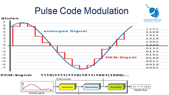

Siskom's Modules 📑

Modul 1
Modulasi analog merupakan proses penumpangan sinyal informasi yang berupa sinyal analog dengan frekuensi lebih rendah pada sinyal pembawa (carrier) dengan frekuensi lebih tinggi. Umumnya terdiri atas AM, FM, dan PM.

Modul 2
Modulasi digital adalah proses penumpangan sinyal digital ke dalam sinyal carrier. Modulasi digital bertujuan mengubah karakteristik sinyal carrier agar sinyal digital dapat diterima secara akurat.

Modul 3
Pulse Code Modulation (PCM) adalah teknik mengubah sinyal analog menjadi digital dalam bentuk kode-kode biner melalui sampling, quantizing, coding, dan decoding.